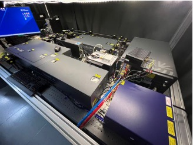
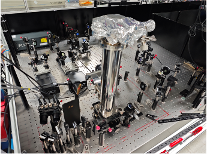

01
Nonequilibrium Dynamics
How do photoexcited carriers and collective excitations form, relax, and transport energy following ultrafast excitation?
We investigate how charge carriers, excitations, and correlated quantum states emerge and evolve across ultrafast and low-energy scales. Our interests include nonequilibrium dynamics, many-body interactions, and low-energy electrodynamics in quantum and low-dimensional materials.
To address these questions, we develop and optimize complementary spectroscopic platforms that connect optical excitation, terahertz electrodynamics, cryogenic transport, and chip-integrated devices.
How do photoexcited carriers and collective excitations form, relax, and transport energy following ultrafast excitation?
How do carrier–phonon, carrier–carrier, and excitonic interactions govern microscopic transport and optical response?
How do electronic correlations, dimensionality, interfaces, and external fields reshape low-energy quantum states?
Our complementary platforms span optical, terahertz, electrical, cryogenic, and chip-scale measurements.
Broadband transient absorption spectroscopy resolves the evolution of excited states, excitons, polarons, and interfacial charge transfer with femtosecond resolution.

Optical-pump–terahertz-probe spectroscopy measures transient photoconductivity and provides access to carrier mobility, scattering, localization, and many-body coupling.

Chip-integrated terahertz spectroscopy guides broadband terahertz pulses through microscopic transmission structures, enabling measurements of micron-scale samples and devices.

Our interdisciplinary research integrates physical insight with precision instrumentation and device engineering. By connecting spectroscopy development with materials and device studies, we aim to resolve quantum phenomena across ultrafast, low-energy, and microscopic scales.